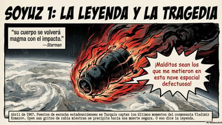
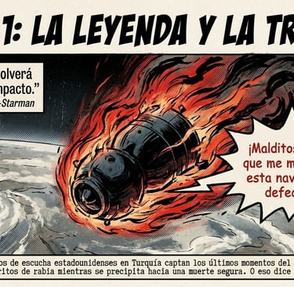

Recursos de Física y Química
Breakouts Digitales
Elemental Querido Átomo (Tabla Periódica): el descubrimiento de un nuevo elemento químico puede acabar con la humanidad. Ayuda a descubrir cómo evitarlo aplicando tus conocimientos sobre la Tabla Periódica, las propiedades periódicas y el enlace químico.
Desde 2º a 4º ESO
El mol mola un mol 1ª parte (Mol, Ajuste reacciones, Leyes de los gases) : consigues viajar al pasado para encontrar la fórmula de la Coca-Cola y traerla al presente. Tendrás que utilizar todo lo que sabes del mol (cambio de unidades) y ajuste de reacciones químicas en esta primera parte
3º- 4º ESO
El mol mola un mol 2ª parte (Mol, Estequiometría): después de haber conseguido la fórmula en la primera parte es hora de ponerte a trabajar para fabricar Coca-Cola. Utilizaremos el mol como unidad para realizar cálculos estequiométricos
4º ESO - 1º Bachillerato
Recambio Climático (Química 3º ESO): os vais a unir a un equipo de científicos que van a intentar revertir la situación del Cambio Climático, aunque para ello debes ser capaz de demostrar todo lo que sabes.
En este breakout tenemos, prácticamente, toda la Química de 3º de ESO (puede servir también de repaso para 4º). Conocer los símbolos de los elementos, identificar los protones, neutrones y electrones de una tabla, propiedades periódicas de los elementos, formulación de compuestos binarios, el mol (factores de conversión) y concentración molar
Se necesitarán dos sesiones
Grand Prix -Leyes de los Gases (Leyes de los Gases): Team Ferrari está realizando un casting para elegir a los miembros de su equipo, demuestra que estás capacitado/a para ese puesto.
Adecuado para 3º-4º ESO
Grand Prix- Cinemática: vas a estrenarte como analista de carreras del número 1 del Team Ferrari, en esta primera parte deberás controlar las 6 primeras carreras del mundial de Fórmula 1
Para 4º - 1º Bachillerato
Salvad la Tierra (Dinámica): un meteorito se acerca peligrosamente a la Tierra. La Agencia Espacial Europea ha contactado con los mejores ingenieros/as para poner en órbita un satélite con una carga explosiva en la trayectoria del meteorito, con el fin de que éste no llegue a la Tierra
4º ESO - 1º Bachillerato
El tesoro de Galileo 1ª parte (Cinemática) después de realizar una intensa investigación hemos sabido que Galileo, antes de ser juzgado por la Inquisición, pasó unos días en Toledo, visitando a un familiar, al que le dejó todo su tesoro. Tu misión consistirá en seguir las pistas que dejó en la ciudad con varios problemas de MRU y MRUA
Para 2º-3º-4º ESO
El tesoro de Galileo 2ª parte (Cinemática) seguimos buscando el tesoro de Galileo, aunque esta vez se complican las pistas: MCU, composición de movimientos, tiro horizontal y parabólico
Para 4º ESO- 1º Bachillerato
El misterio del Titanic (Hidrodinámica): uno de los marineros del Titanic envió a su familia antes de su partida que le habían encargado de la custodia de una gran cantidad de joyas propiedad de un rico hacendado americano. Por si ocurría algo le dejo unas pistas a su familia que indicaba el lugar en el barco en el que se había escondido.
Para 4º ESO- 1º Bachillerato
Port Aventura (toda la Física): para mí la mejor forma de aprender Física es en parque de atracciones: cambios de unidades, cinemática, dinámica, energía,... jugando. Gracias a Maria Piles por la colaboración
Si eres profes puedes solicitar soluciones a ernesto@fundacionflors.es
Actividades, propuestas y experiencias para trabajar conceptos clave de Física y Química a través de metodologías activas y narrativas.
Propuestas basadas en narrativas desafiantes que fomentan la aplicación de conceptos y el pensamiento crítico.
Pruebas escritas con narrativa
4º de ESO
Teorías atómicas, Configuración electrónica, Enlace Químico y Propiedades Periódicas
Viaje a la Alemania Nazi (curso 20/21)
Encuentro con Demócrito (curso 21/22)
Exploradores de Xilophya (curso 23/24)
Leyes Básicas de la Química / Leyes de los Gases
Reacciones químicas
Descubrimos la Coca-Cola (curso 20/21)
Cleopatra: suicidio o envenenamiento (21/22)
Cinemática: MRU, MRUA; Caída libre, moviiento de dos dimensiones y MCU
Los primeros coches de carreras (curso 20/21)
La carrera de la Isla de Man (curso 21/22)
I like to move it: Viaje a Palma (curso 22/23)
Dinámica: Leyes de Newton, Ley de Hooke, Gravitación Universal
Hidrodinámica
El submarino de Isaac Peral (curso 21/22)
Monasterio Shaolin (curso 22/23)
3º ESO
Sustancias puras y mezclas, métodos de separación de mezclas, densidad y concentración, leyes de los gases
La extraña muerte de Mandonna (curso 20/21)
Tabla Periódica, partículas subatómicas, átomos/iones/isótopos, Propiedades Periódicas, El mol
Descubre al Hacker (curso 20/21)
Cinemática: cambio unidades, gráficas, conceptos básicos, MRU y MRUA
Investiga un posible asesinato (curso 20/21)
Dinámica: leyes de Hooke, leyes de Newton.
¿Asesinato o accidente? (curso 20/21)
Propuestas basadas en narrativas desafiantes que fomentan la aplicación de conceptos y el pensamiento crítico.Pruebas escritas con narrativa contextualizada, diseñadas para evaluar comprensión profunda de contenidos científicos.
Otras actividades de Física
CINEMÁTICA
PortAventura: trabajando toda la física de 4º de ESO
Actividades para realizar previa, posterior y en PortAventura
si utilizas el parque de atracciones para el estudio de la Física: ¡ÉXITO ASEGURADO!. En esta carpeta puedes ver el trabajo previo, en el parque y el posterior a la visita a PortAventura. Está pensado para 4º ESO
Velocidad, rapidez y aceleración:
Actividades
Los conceptos de rapidez y velocidad suelen entenderse bastante bien, no así el de aceleración, cuesta entenderlo, hasta ahora lo mejor que me ha ido es este conjunto de actividades que les hace reflexionar sobre estos conceptos
Para 2º-3º ESO
¿Cómo quedaríamos en la carrera?
Actividad práctica en el patio
En esta actividad el alumnado va a interiorizar los conceptos de velocidad y comparará su máxima velocidad en una pista y comparará sus resultados con los récords mundiales de los 100 m y la maratón. Una actividad en la que se crea muy divertida y memorable
Para 3º o 4º de ESO
Els récords mundials d'atletisme
Actividades
Actividad cuyo objetivo es calcular las velocidades medias de los récords mundiales de atletismo hasta el 2021, tanto femenino como masculino.
Colección de ejercicios CSI Flors (3º-4º ESO) organizados por niveles de dificultad
Actividades
Colección de 30 problemas de Cinemática organizados por niveles de dificultad: Básico, Medio y Avanzado, en la que los alumn@s son los protagonistas. Si te gustan y quieres la versión editable sólo hay que pedirla
Preguntas aleatorias en vídeo para utilizarlas con alguno de los Tableros de Juego
Juego grupal
En este caso esta colección de preguntas se debe de utilizar con cualquiera de los tableros de juego. Simplemente se trata de resolver los mismos problemas de siempre pero presentando otro escenario. Es muy recomendable realizar la actividad en grupos cooperativos
Aprendizaje basado en problemas
En ésta actividad, traducida y adaptada de la original "El primer día de Trabajo" de Nathaniel Lasri, l@s alumn@s deberán averiguar si la agencia de seguros deberá pagar la reparación del vehículo accidentado o no
DINÁMICA
¿Cuánto pesas? Entendiendo los conceptos de masa y peso
Trabajo práctico en grupo con desafíos
En estas actividades se propone construir una balanza gravitacional y una balanza inercial para comparar los resultados de masa de varios objetos desconocidos, utilizando como unidad de medida céntimos de euro
Trabajo práctico en grupo con desafíos
Con este conjunto de actividades el alumnado identificará los factores que influyen en la fuerza de rozamiento, descubrirán que depende del peso del objeto y del tipo de material, pero no de la superfície de contacto entre superfícies. Finalmente descubrirán en un plano inclinado la influencia de la fuerza normal en la fuerza de rozamiento
Aprendizaje basado en problemas
Ha llegado a conocimiento del CSI Flors que una banda de supuestos estafadores compra oro en unas ciudades del mundo y los vende en otros, aplicando sus conocimientos de física y que el valor de g no es igual en los diferentes lugares del planeta, emprenden un negocio. ¿Será rentable?
Laboratorio Virtual
Si no dispones de Laboratorio en condiciones, tienes un grupo complicado, tienes miedo de ir al laboratorio, etc, dispones de éste Laboratorio Virtual de Phet (muy intuitivo y fácil de usar) en el que podrás dar a entender la Ley de Hooke
Laboratorio Virtual
Otro laboratorio de Phet, en éste caso podemos tratar la suma y resta de fuerzas, y sus efectos (Segunda Ley de Newton)
Trabajo práctico en grupo con desafíos
Los estudiantes van a descubrir las tres leyes de Newton a partir de distintos desafíos con los que van a descubrir la magia de la física. Con materiales muy fáciles de adquirir, con cuestiones que harán replantearse cómo funciona el mundo. Incluyo en el itinerario diferentes propuestas que a mí me han funcionado, y situaciones en las que te puedes encontrar
Aprendizaje basado en juegos
Ésta propuesta tiene como objetivo introducir las 3 leyes de Newton con 3 juegos. En el enlace tienes la propuesta. Cuando las clases son a última hora, o necesitas sorprender son una buena alternativa. Éstas actividades se encuentran también el la propuesta "Menudo crack Newton"
Otras actividades de Química
LA MATERIA: MEZCLAS Y SUSTANCIAS PURAS
Breaking Lab: identifica el material que se utiliza en el laboratorio analizando una escena de la serie Breaking Bad.
Relevo material: se trata de un juego que debe realizarse en el patio y en el que los alumnos deberán conseguir tres tipos de mezclas homogéneas, heterogéneas, compuestos y elementos, jugando en equipo
Separación de mezclas: para aplicar los métodos de separación de mezclas en diversas investigaciones dentro de la gamificación CSI Flors
Version en Valenciano Versión en Castellano
Itinerario Práctico para entender el concepto de DENSIDAD: no sé por qué el concepto de densidad es uno de los más sencillos pero de los que más cuesta entender. Con el tiempo he ido creando un itinerario (parece que ahora se llama así) para que este concepto quede perfectamente entendido
Identificación de elementos, compuestos, mezcla homogéneas y mezclas heterogéneas: actividad interactiva en el que el alumnado dispondrá de 5 minutos para colocar cada una de las 16 sustancias que aparecen en su lugar adecuado
¿Disolución o soluto?: en ésta actividad interactiva hay que clasificar como disolución o como soluto varias sustancias
Densidad/Concentración: ejercicios que servirán para practicar lo aprendido en clase en relación con los conceptos densidad y concentración. Una vez resueltos para el grupo/clase se proponen otros ejercicios de varios niveles de complejidad básico, medio y avanzado
Version en Valenciano Versión en Castellano
Los estados de la materia: actividad de Phet, en la que se puede conocer cómo se encuentran diferentes sustancias en estados sólido, líquido y gas, así como también ver qué ocurre al aumentar o disminuir la presión y los cambios de estado
Laboratorio CSI: han llegado al laboratorio 5 muestras de metales, en las que deberás enviar un informe para ratificar o rectificar las denuncias que se han presentado aplicando los conocimientos sobre el cálculo de la DENSIDAD
TABLA PERIÓDICA
Los modelos atómicos: con ésta actividad interactiva, se pretende que el alumnado identifique los principales modelos atómicos que han existido.
Cazadores de elementos: actividad para trabajar en grupos cooperativos. En la primera sesión los grupos deben conseguir el máximo número de cartas de elementos acertando adivinanzas o símbolos. En la segunda sesión deberán construir nombres de objetos, animales, ciudades,... para conseguir puntos y demostrar que conocen la tabla periódica
Viajando al origen: elementos de la Tabla Periódica y configuración electrónica. A partir de unas pistas deben descubrir el elemento del que se trata y contestar a una serie de preguntas relacionadas. Diseñado para realizar con la técnica del folio giratorio para grupos cooperativos
Versión en valenciano Versión en castellano
Adivina qué elemento soy: es un juego adecuado para jugar en grupo, y cuyo objetivo es que el alumnado conozca los símbolos de los elementos de la Tabla Periódica. También se puede utilizar este juego para adivinar los estados de oxidación
Los modelos atómicos (ENTREVISTA A SUS CREADORES): actividad para trabajar en grupos cooperativos. Los alumnos utilizan la IA para hacer preguntas a cada uno de los científicos creadores de los distintos modelos atómicos que han existido en la historia, pero no sólo quieren conocer esos modelos. Después de la entrevista deben presentar a sus compañer@s lo que han aprendido de su vida personal, de lo vivido en su época, de sus estudios y por supuesto de su modelo, contrastando la información recibida (que no siempre es correcta) Resumen de la actividad
Sube la escalera: es un juego en el que hay que llegar al final de la escalera, respondiendo a preguntas relacionadas con los elementos de la Tabla Periódica, configuración electrónica, propiedades periódicas y enlace químico. ¡Estresante! pero Divertido... eso te dicen
Construye un átomo: con esta actividad interactiva de Phet el alumnado podrá construir átomos para entender los conceptos de número atómico, número másico, aniones y cationes. Al final la evaluación es un juego
Usos de los elementos de la Tabla Periódica: una actividad para ir familiarizándose con los nombres de los elementos de la Tabla Periódica. Consiste en utilizar el Juego del Ahorcado dando como pistas los principales usos de los elementos de la Tabla Periódica
FORMULACIÓN INORGÁNICA
Juego de mesa de Formulación Inorgánica: la formulación y nomenclatura es un rollo ¿a que sí? Pues no. Si la conviertes en un juego la cosa cambia (también adecuada para 3º ESO)
Juegos de Formulación: la formulación suele ser un "hueso" para la mayoría de nuestros alumnos. Por este motivo suele ser motivador el utilizar algunos juegos que ayuden en su entendimiento.
Propongo dos juegos que me han dado buenos resultados, dependiendo de la cantidad de alumnos que participen en el juego
- Juego de los Hexágonos: es un juego de cartas en el que deben ir encajando hexágonos y para obtener los puntos deben decir su nombre
- Juego de Dados: versión digital de Iris Morey, en la que se "lanzan" los dados de cationes y aniones para que se formula y nombre el compuesto que ha salido
Ejercicios de Formulación Inorgánica: colección de ejercicios para formular compuestos binarios y oxoácidos. Adecuada para 3º de ESO
EL MOL
El extraño caso del vuelo 1023: excepcional el recurso que comparte Miguel Quiroga trabajando la composición centesimal
He modificado algo de la narrativa del original y he hecho una versión digital del problema
La sustancia inflitrada al laboratorio de CSI Flors han llegado varias sustàncias a las que se ha hecho su análisis y se ha calculado su masa molar. El inspector jefe quiere conocer nuestra destreza en el cálculo de la masa molar por lo que ha introducido una o más sustancias infiltradas. ¿Serás capaz de identificarla/s?
Cálculo de la masa molar
LEYES DE LOS GASES
Leyes de los gases: infiltrado en un equipo de Fórmula 1 deberás descubrir quien o quienes pretenden asesinar a su primer piloto. Se puede reforzar con los problemas de nivel Básico y Comisario
Versión en Valenciano Versión en Castellano
REACCIONES QUÍMICAS
Leyes Básicas: tu equipo está inmerso en la investigación de una explosión que se ha producido en la ciudad de Gotham, en la que deberás aplicar tus conocimientos adquiridos en las leyes básicas de la química, composición centesimal y reactivo limitante
Se utiliza como investigación final (de ampliación) después de haber realizado las actividades de nivel Básico, Medio y Avanzado
Historia de los modelos atómicos
Isaac Newton
Las Leyes de los Gases
Densidad vs Concentración dos conceptos que confunden
Galileo Galilei
El concepto de MOL
Fritz Haber
Harry Daghlian y Louis Slotin


Komarov: mi fiel amigo
Cuando el brillo se convierte en pesadilla
Historias curiosas de la Ciencia
Cómics
Apps para practicar jugando
Física
Deberás aplicar la Ley de Hooke en diferentes astros del Sistema Solar
Hunde al barco aplicado tus conocimientos sobre el tiro horizontal
Identifica los datos eligiendo tu narrativa preferida y resuelve el caso. También puedes escucharlo y después resolverlo. MRUA
Identifica los datos eligiendo tu narrativa preferida y resuelve el caso. También puedes escucharlo y después resolverlo. Ley de Newton
Resuelve estos 15 casos de situaciones aplicando la Segunda Ley de Newton
Si quieres ser millonario deberás demostrar tus conocimientos sobre las magnitudes y sus unidades
Cronos: una aventura en la que deberás utilizar tus conocimientos sobre la NOTACIÓN CIENTÍFICA para salvar a la Humanidad
Con este juego podrás poner a prueba tus conocimientos sobre FACTORES DE CONVERSIÓN, aumentando la dificultad e identificando posibles errores
Los investigadores del CSI Flors deben resolver varios casos, en los que deberán aplicar sus conocimientos sobre el MRU, A la finalización de su investigación descargaran un enlace PDF que proporcionarán a sus superiores
En esta ocasión en el laboratorio de CSI Flors han aparecido varios objetos encontrados en la escena de un robo y deberán ser identificados por los aspirantes, aplicando sus conocimientos sobre DENSIDAD. A la finalización de la investigación deben enviar su informe al Inspector Jefe en formato PDF
Los aspirantes del CSI Flors deberán demostrar sus habilidades para medir los volúmenes de diferentes sólidos irregulares utilizando correctamente diferentes probetas.
Magnitudes y unidades, en este juego te propondrán una magnitud y desde ese momento iran "cayendo" diferentes unidades, pero solo deberás marcar las que corresponden a esa magnitud
Se ha producido un robo en Vila-real. Nuestros agentes están recopilando prueba sobre los autores del robo. Los aspirantes del CSI Flors deberán enviar su informe en PDF para tratar de identificar a los ladrones
En esta misión, los agentes del CSI Flors deberán aplicar sus conocimientos sobre la ley de OHM para superar la prueba. Deberán enviar su informe en PDF para el inspector jefe
En la realidad es muy importante, para después poder realizar informes detallados, identificar las fuerzas que actúan en una situación. En este laboratorio los agentes podrán investigar sobre esto
En esta actividad deberás relacionar MAGNITUDES y UNIDADES
Desafío del Tiro Parabólico: una sección del CSI se dedica a ayudar a los jugadores del Vila-real Club de Basket a elegir mejor los ángulos de tiro y/o la velocidad a la que debe producirse el lanzamiento.
En este laboratorio, se investigan las velocidades, aceleraciones o frenados (MRUA) en diferentes posibles accidentes de tráfico. Cada aspirante a la finalización de su estudio enviará su informe
Después de cada entrenamiento debe enviar un informe a su entrenador
Con este juego podrás aprender los elementos de la Tabla Periódica, con diferentes niveles de dificultad
Juego para identificar los solutos, los disolventes y las disoluciones. Ten en cuenta que te irá cambiando el objetivo
No se trata de un juego, escribiendo el nombre del elemento te proporciona directamente su configuración electrónica
Juego gamificado para jugar por equipos. Todas las preguntas están relacionadas con los modelos atómicos y la dificultad de ellas es por azar
Química
Para trabajar el ajuste de reacciones químicas, aumentando la dificultad.
Clasifica diferentes sustancias en elementos, compuestos, mezclas homogéneas y mezclas heterogéneas
Practica la formulación inorgánica de los compuestos binarios subiendo a la cima
También puedes practicar con el juego de los topos. Formulación de compuestos binarios
Los aspirantes del CSI Flors deben aprender a entender las reacciones y el concepto de reactivo limitante. Se les pondrá a prueba con diferentes retos.
Otra propiedad característica de una sustancia es a las temperaturas que ocurren los CAMBIOS DE ESTADO.
Con esta aplicación, los aspirantes entenderán claramente en qué consiste un cambio de estado, en qué se invierte la energía para que se produzcan y verán las curvas de calentamiento
Para cualquier aspirante al CSI Flors es imprescindible dominar el concepto de mol y saber pasar a gramos, átomos, moléculas o litros de gas. Esta app te ayudará a conseguirlo
Con esta app podrás visualizar el concepto de mol, fijándote en las unidades de masa cuando es un átomo o una molécula o cuando en un mol
Con esta app los aspirantes del CSI van a deducir las leyes de los gases, no es tarea fácil pero no imposible: Boyle, Charles, Gay-Lussac y Avogadro no lo tendrían fácil con ell@s
Configuración electrónica y Tabla Periódica es una relación íntima, que los agentes del CSI Flors deben conocer. Sitúa a cada elemento en el lugar que le corresponde en la Tabla Periódica según su configuración electrónica. Puedes elegir el idioma y enviar tu informe (idea original de Montserrat Cubias)
Mezclas: con este juego vas a tener que explotar distintos globos que te propondrá la IA; mezclas homogéneas, heterogéneas, elementos, compuestos, disoluciones, solutos, disolventes.
Para explotarlos deberás utilizar sus dedos. Es necesario activar la cámara del ordenador para jugar
Rayos catódicos: laboratorio experimental en el que descubrirás la verdadera naturaleza de los electrones.
Idea original de Miquel Flexas